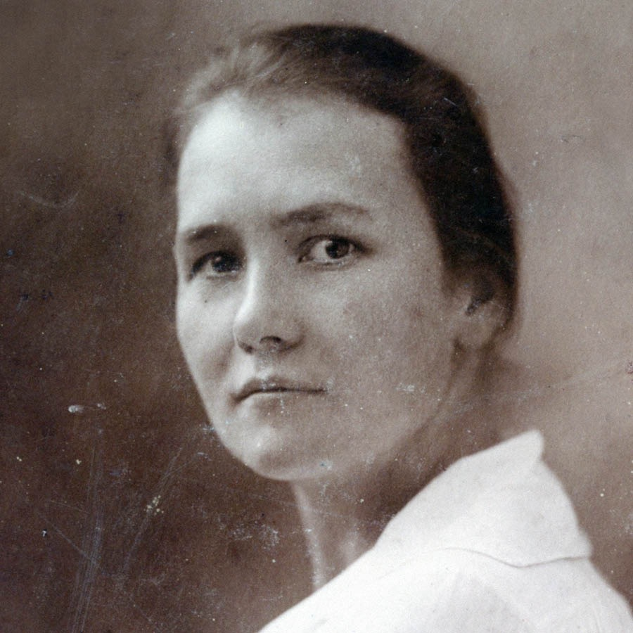
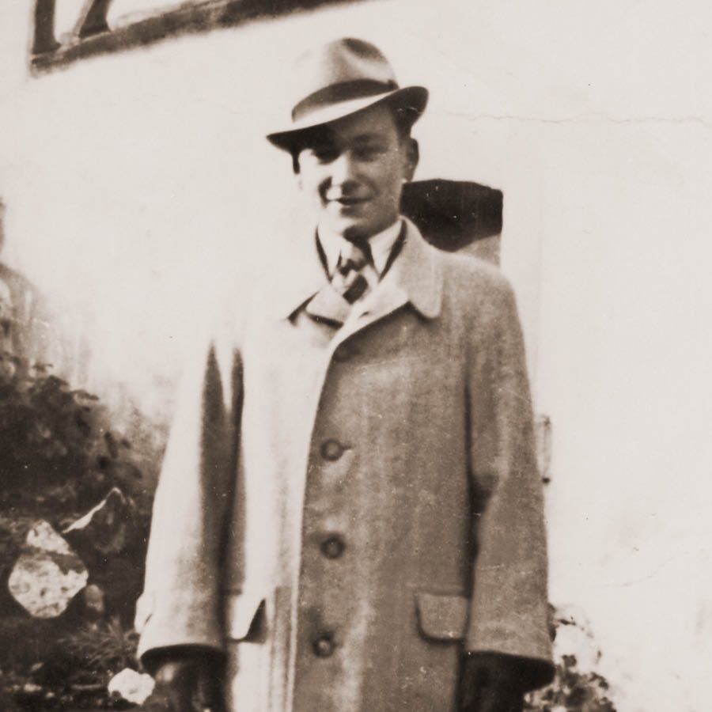

What Happened to Jehovah’s Witnesses During the Time of the Holocaust?
About 1,500 of Jehovah’s Witnesses died during the time of the Holocaust, out of some 35,000 Witnesses living in Germany and Nazi-occupied countries. The cause of death is not known in all cases. Since research is ongoing, figures and other details may be updated in time.
Executions: Close to 400 Witnesses were executed in Germany and in Nazi-occupied countries. Most victims were tried in court, sentenced to death, and beheaded. Others were shot or hanged without a formal court hearing.
Severe detention conditions: More than 1,000 Witnesses died in Nazi concentration camps and prisons. They were worked to death or died as a result of torture, starvation, exposure to cold, illness, or poor medical care. As a result of the brutal treatment, others died shortly after their liberation at the end of World War II.
Other causes: Some Witnesses were killed in gas chambers, subjected to deadly medical experiments, or given lethal injections.
Why were they persecuted?
Jehovah’s Witnesses were persecuted because they adhered to the Bible’s teachings. When the Nazi state demanded that the Witnesses do what the Bible forbids, the Witnesses refused to comply. They chose to “obey God as ruler rather than men.” (Acts 5:29) Consider two areas in which they made that choice.
Remaining politically neutral. As are Witnesses in all countries today, Jehovah’s Witnesses living under Nazi rule were neutral in political issues. (John 18:36) Therefore, they refused to
Show kindness to their neighbors, including Jews.—Mark 12:31.
Hold on to their faith, refusing to sign a document renouncing their beliefs.—Mark 12:30.
Professor Robert Gerwarth concludes that Jehovah’s Witnesses were “the only group in the Third Reich to be persecuted on the basis of their religious beliefs alone.”a Fellow concentration-camp prisoners came to admire Jehovah’s Witnesses for their firm stand. One Austrian prisoner observed: “They do not go to war. They would rather be killed than kill anyone else.”
Where did they die?
Concentration camps: The majority of Jehovah’s Witnesses died in concentration camps. They were incarcerated in camps such as Auschwitz, Buchenwald, Dachau, Flossenbürg, Mauthausen, Neuengamme, Niederhagen, Ravensbrück, and Sachsenhausen. In Sachsenhausen alone, about 200 deaths of Jehovah’s Witnesses have been verified.
Prisons: Some Witnesses were tortured to death in prisons. Others died because of the injuries inflicted during interrogation.
Places of execution: Jehovah’s Witnesses were executed mainly in Berlin-Plötzensee, Brandenburg, and Halle/Saale prisons. In addition, some 70 other locations where Witnesses were executed have been documented.
Some of those executed

Name: Helene Gotthold
Place of execution: Plötzensee (Berlin)
Helene, a wife and mother of two children, had been arrested several times. In 1937, she was mistreated so badly during one interrogation that she lost her unborn baby. On December 8, 1944, she was beheaded by guillotine in Plötzensee prison, Berlin.

Name: Gerhard Liebold
Place of execution: Brandenburg
Twenty-year-old Gerhard was beheaded on May 6, 1943, two years after his father had been beheaded in the same prison. He wrote in his farewell letter to his family and fiancée: “Without the power of the Lord, I would not have been able to walk this path.”
Name: Rudolf Auschner
Place of execution: Halle/Saale
Rudolf was just 17 years old when he was beheaded on September 22, 1944. In his farewell letter to his mother, he wrote: “Many brothers have walked this path, and so will I.”
aHitler’s Hangman: The Life of Heydrich, page 105.